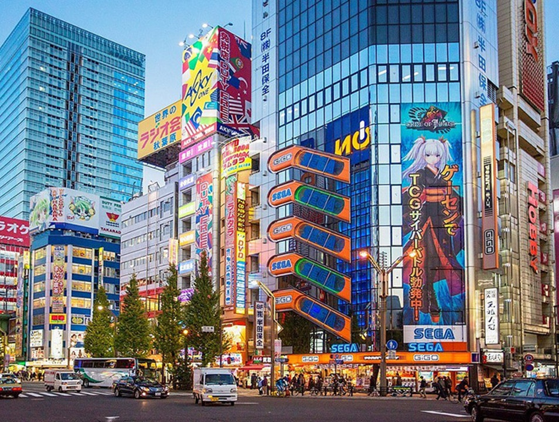

Tóquio, conhecida em japonês como 東京 (Tōkyō), que significa “capital do leste”, é a capital do Japão e uma das 47 províncias do país. Localizada na ilha de Honshu, a maior do arquipélago japonês, Tóquio é uma metrópole vibrante e densamente povoada, com uma população de cerca de 14 milhões de habitantes na cidade e mais de 37 milhões na região metropolitana, tornando-a a área urbana mais populosa do mundo. Mas, você deve se perguntar: "Qual a importância de Tóquio para o mundo?" Tóquio é um centro global de cultura, tecnologia, e economia. A cidade combina harmoniosamente tradições milenares com a modernidade, oferecendo uma experiência única aos visitantes. Entre os pontos turísticos mais famosos estão a Torre de Tóquio, o Templo Senso-ji, e o cruzamento de Shibuya, conhecido por ser um dos mais movimentados do mundo.
- I-Templo Senso-ji
- II-Akihabara
- III-Shibuya
- IV-A Torre de Tóquio
- V-Parque Ueno
Tópicos abordados na Página
I-Templo Senso-ji

O Templo Senso-ji, localizado em Asakusa, é o templo budista mais antigo de Tóquio e um dos mais importantes. Fundado em 645 d.C., é dedicado à deusa Kannon. O complexo do templo é um local vibrante, com a famosa porta Kaminarimon, que leva à Nakamise-dori, uma rua cheia de lojas tradicionais que vendem lembranças e comidas típicas. A atmosfera histórica e espiritual do Senso-ji oferece uma experiência única de imersão na cultura japonesa.
II-Akihabara
Akihabara, também conhecida como “Cidade Elétrica”, é o epicentro da cultura otaku e da tecnologia em Tóquio. Este bairro é famoso por suas lojas de eletrônicos, mangás, animes e jogos. Akihabara é um verdadeiro paraíso para os fãs de animes, com inúmeras lojas especializadas, cafés temáticos e eventos relacionados. Além disso, a vibe futurista do bairro, com seus letreiros de neon e arranha-céus, faz com que os visitantes se sintam em um cenário de ficção científica.
III-Shibuya

Shibuya e o Cruzamento Mais Movimentado do Mundo Shibuya é um dos bairros mais icônicos de Tóquio, conhecido pelo seu famoso cruzamento, onde milhares de pessoas atravessam ao mesmo tempo em todas as direções. Este cruzamento é um símbolo da energia e dinamismo da cidade. Além disso, Shibuya é um centro de moda e entretenimento, com inúmeras lojas, restaurantes e clubes. A estátua de Hachiko, o leal cão Akita, é outro ponto de interesse popular, localizada bem em frente à estação de Shibuya.
IV-A Torre de Tóquio

A Torre de Tóquio, inspirada na Torre Eiffel, é um dos marcos mais reconhecíveis da cidade. Com 333 metros de altura, oferece vistas panorâmicas incríveis de Tóquio e, em dias claros, é possível avistar o Monte Fuji. A torre também abriga museus, restaurantes e um aquário. À noite, a Torre de Tóquio é iluminada, proporcionando um espetáculo visual deslumbrante que destaca a beleza da cidade.
V-O Parque Ueno

O Parque Ueno é um dos maiores e mais populares parques de Tóquio. É famoso por suas cerejeiras, que atraem milhares de visitantes durante a temporada de sakura (floração das cerejeiras). O parque também abriga vários museus importantes, como o Museu Nacional de Tóquio, o Museu Nacional de Arte Ocidental e o Museu de Ciências. Além disso, o Zoológico de Ueno, o mais antigo do Japão, está localizado dentro do parque, oferecendo uma variedade de atrações para todas as idades.